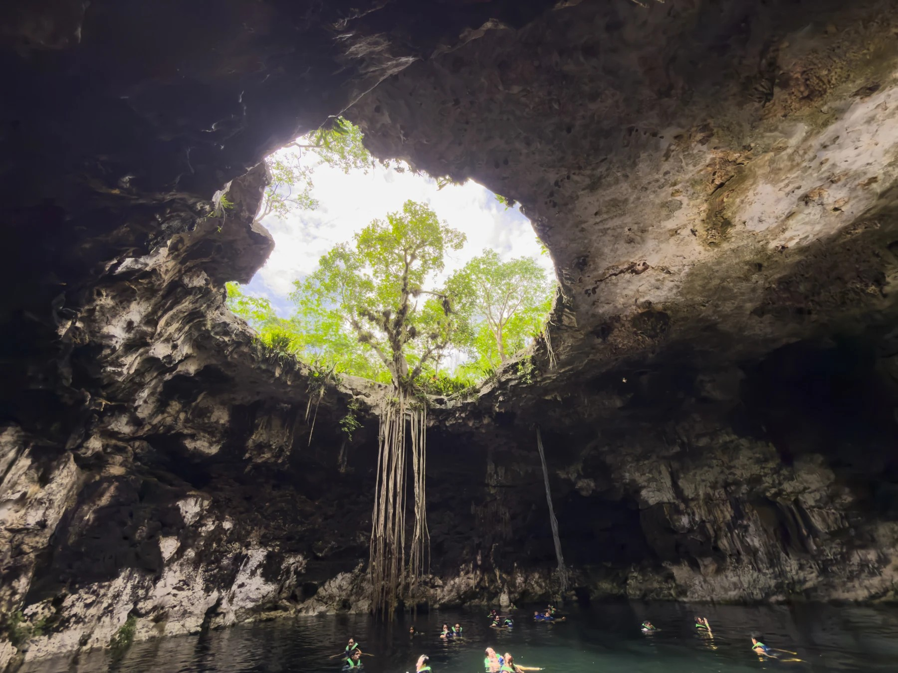

From itinerary to story
Photograph and film the journey from arrival to wildlife experiences, guided walks and time on the water, helping travellers picture the full experience.
Original photography and film to help Manya show what makes its journeys in Uganda memorable: the landscapes, the people and the experiences in between.
Explore the proposal ↓ Portfolio image · photographed outside Uganda
Portfolio image · photographed outside UgandaA shared starting point
Manya’s Uganda itineraries combine wildlife encounters with local guides, community homestays and carefully chosen places to stay. There is an opportunity to show future travellers how those moments feel.
I’m Juan Aizpuru, a photographer and filmmaker. I would love to hear what you have in mind for FITUR and explore how we might work together.
A production built around your itineraries and the places you want to promote, shaped together with your team in Uganda.
Photograph and film the journey from arrival to wildlife experiences, guided walks and time on the water, helping travellers picture the full experience.
Meet guides, hosts and communities with the guidance of your local team. Capture the people and places that make each journey personal, with their consent.
A tailored library for your website, itineraries and campaigns, or a complete campaign developed with you. We agree the scope and usage together.

Portfolio image · photographed outside UgandaI would travel to Uganda to produce new work with Manya’s team and local guides, planning the route, access and time on the ground around your priorities.
The photographs here are from my existing portfolio, created outside Uganda. They show my visual approach; all images of your journeys would be newly created on location.
Learn about Manya, your plans and where visual content could support your business.
Choose the experiences, locations and audiences together, with a schedule that fits the project.
Produce photography and film with your local team. Formats and usage are agreed for your needs; Juan retains ownership of the work.
Yvonne, I would be delighted to meet, learn more about Manya and discuss what a collaboration could look like.
Explore Juan's portfolio ↗